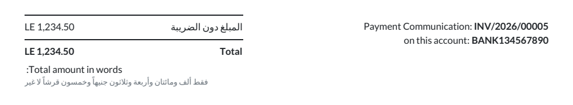
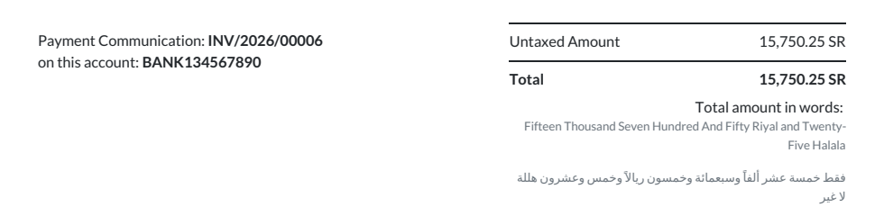

Print the invoice total in correct Arabic words, the way accountants write it:
فقط ألف ومائتان وأربعة وثلاثون جنيهاً وخمسون قرشاً لا غير
Odoo writes amounts with a generic library that ignores Arabic number grammar. It writes 2,000,000 as "مليونا" instead of "مليونان", "خمسون قرش" without the accusative, puts a space after every "و", and knows nothing about the currency noun that must follow the number.
This app replaces it with a grammar engine built for Arabic financial documents:
| Number | Form of the currency | Example |
|---|---|---|
| 1 | noun + واحد | جنيه واحد / هللة واحدة |
| 2 | dual | جنيهان / هللتان |
| 3 – 10 | plural, opposite gender | ثلاثة جنيهات / ثلاث هللات |
| 11 – 99 | singular accusative | أحد عشر جنيهاً |
| 100, 1,000, … | singular genitive | مائة جنيه / ألفا جنيه |
Invoices printed in Arabic show the corrected text on Odoo's own "amount in words" line.

One setting adds the Arabic amount under the English one on invoices printed in any other language, as required on bilingual invoices in Saudi Arabia and the Gulf.

Questions or problems: contact me through the Odoo Apps store and I will answer within two working days.